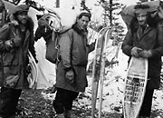
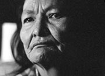
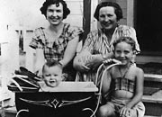
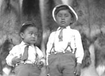
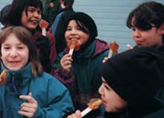
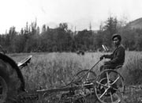

The territory’s population underwent a massive shift in the late 19th century. There were probably no more than 4,000 aboriginal people and perhaps 1,000 traders and non-native prospectors. The numbers exploded in a few short years to more than 40,000. Americans probably made up 75 percent of the gold rush populace; James Walsh, the territory’s first Commissioner, estimated that only 25 percent of residents were British subjects, and only half of those were Canadians. A similar situation occurred in the 1940s, during the construction of the Alaska Highway, when residents were again outnumbered by Americans.
By 1928 the territory’s population had dropped to 3,500, about 40 percent of whom were First Nations people. At that time, Dawson was the largest community, with about 1,000 people. Keno, with 500 residents, had more people than Whitehorse.
Today the Yukon has the second lowest population density (people per square kilometre) in the country — Prince Edward Island’s is almost 50 times higher. Approximately 34,000 people make their homes here, including about 7,000 First Nations people. The percentage of women in the Yukon has grown from 15 percent in 1901 to 48 percent today.
"There were fourteen of us travelling north. I don’t suppose if Dr. Gallup himself had been around to pick the passengers he could have obtained a more accurate sample of the Yukon’s population from this sleigh-load of men and women."
Laura Berton (writing about her journey on the Whitehorse-Dawson stage line, 1909)
I Married the Klondike
The Yukon Francophone Community
The French-speaking community of the Yukon includes people from all parts of the country and abroad. It is a community of pioneers who have preserved their values and language. Francophones have been part of the Yukon population since the days of the fur trade.
One of the best-known pioneers was Emilie Tremblay. She came to the territory with her husband in 1894, and was the first non-native woman to climb the Chilkoot. The couple lived at Miller Creek in the Fortymile area, one of the Yukon’s earliest mining settlements. They left for a time in the fall of 1895 but returned in 1898. Emilie remained in the Yukon until the early 1940s; she died in Victoria in 1949 at the age of 77.
Continue to Living on the land
Who we were; who
we are
(Above) Joe Hatfield in the officers’ mess, Watson Lake, January 1945.
YA, Turner collection, 88/16 #48A
Alex Van Bibber, Curly Desrosiers and Harry Cooper prospecting in the Firth River area, 1948. Cooper piloted his own plane to the area.
YA, Alex Van Bibber collection, 92/28 #15
Selkirk First Nation member Rosie Silverfox, 1987.
YA, Selkirk First Nation collection #9658
Jean Todd and Amy Wilson with a young girl and a baby, Whitehorse, 1951.
YA, Todd collection #9009
Two small boys, Teslin, n.d.
YA, G. Johnston collection, 82/428 #75
A group of children with maple taffy, which is made with maple syrup and snow. L’Association franco-yukonnaise (AFY) makes them every year during Sourdough Rendezvous at their “sugar shack”.
AFY
Moose Jackson on hay rake, Dezadeash Lake area, n.d.
YA, Beloud collection, 92/29 #1